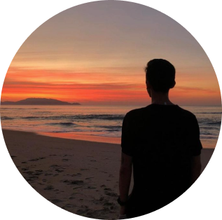

Desenvolvedor
Front End
& UI Designer
Localizado em Tubarão-SC
EXPERIÊNCIAS
2020
Cincatarina
Participei no desenvolvimento de projetos como consulta de CNPJ, e um sistema de processo eletrônico.
Desenvolvedor
HTML
CSS
Javacript
VueJS
NestJS
NuxtJS
2019
Mídia Local Soluções
Participei no desenvolvimento de um projeto de gestão de redes de fibra óptica.
Desenvolvedor
HTML
CSS
Javacript
JQuery
PHP
2017
Engeplus
Trabalhei com instalação e manutenção de redes de fibra óptica.
Desenvolvedor
Redes
FORMAÇÃO
Minha mais recente experiência acadêmica foi a graduação 🎓 em Análise e Desenvolvimento de Sitemas, que fiz no Instituto Federal de SC. Além disso me mantenho sempre atualizado com cursos intensivos online.
-
TÉCNOLOGO
Análise e Desenvolvimento de Sistemas
IFSC
CURSOS INTENSIVOS
- UI Design Avançado15h
- VueJS 2 Completo22h
- React Completo18h